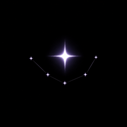
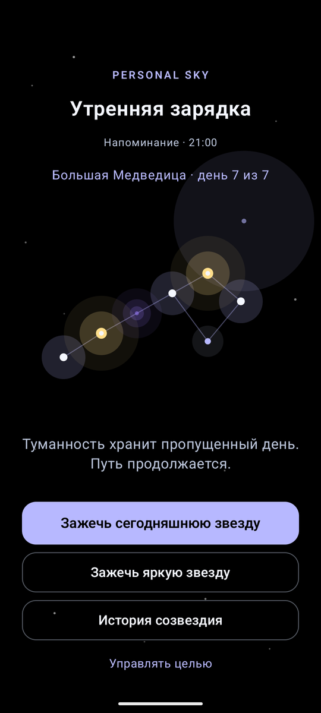
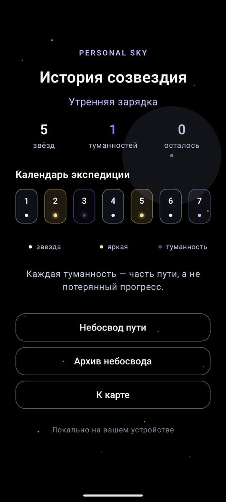
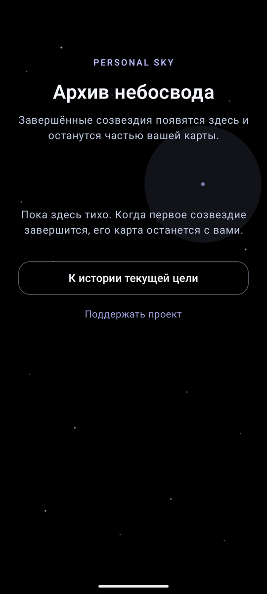
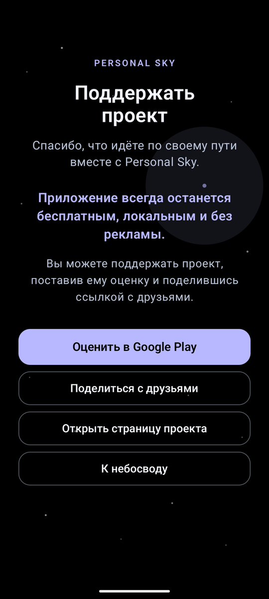
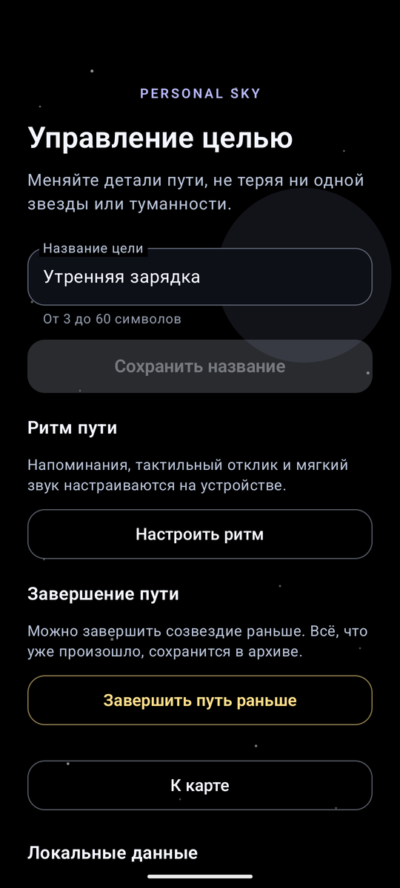

Шаг 1
Небольшая цель
Первая привычка «Утренняя зарядка» и маршрут на 5, 7 или 14 дней.
Android-приложение

Трекер привычек, в котором маленькие действия складываются в личное созвездие — без обнуления пути из-за пропущенных дней.
Создайте небольшой путь на 5, 7 или 14 дней. Обычная отметка зажигает звезду, а день с дополнительным усилием — яркую звезду. Если день был пропущен, путь не исчезает: на его месте остаётся мягкая туманность.
Шаг 1
Первая привычка «Утренняя зарядка» и маршрут на 5, 7 или 14 дней.
Шаг 2
Обычная звезда — минимальный шаг, яркая звезда — день, когда сделали больше.
Шаг 3
Пропущенный день занимает туманность. Это часть карты, а не потеря прогресса.
«Личный небосвод» не обещает идеальную дисциплину. Он помогает увидеть движение таким, каким оно было на самом деле: с маленькими огнями, паузами и продолжением.
Пять кадров из рабочей версии — от карты созвездия до управления целью. Прокрутите вбок.

Карта путиСозвездие дня с масштабированием и перемещением.

История созвездияСводка по звёздам, туманностям и календарь пути.

Архив небосводаЗавершённые цели остаются частью вашей карты.

Поддержать проектОценка в Google Play и добровольная поддержка.

Управление цельюНазвание, напоминания и завершение пути досрочно.
Кассиопея, Большая Медведица и Орион для коротких личных путей.
Пропуск не обнуляет историю: он остаётся частью честной карты.
Календарный путь, завершённые цели и общий «Небосвод пути».
Напоминание в выбранное время без аккаунта, облака и внешних сервисов.
Текущий день пути рядом на главном экране Android.
Экспорт завершённого созвездия в PNG и небольшая награда за путь.
Приложение работает локально на устройстве. В текущей версии нет обязательного аккаунта, рекламы, внешней аналитики и серверной синхронизации. Цели, отметки и настройки остаются на вашем устройстве.
Поддержка проекта
Personal Sky бесплатное: без рекламы, без аккаунта и без аналитики. Если приложение оказалось полезным, поддержать его разработку можно добровольно — любая сумма помогает выпускать обновления и оставаться без рекламных блоков.
Сказать спасибо нажмите, чтобы поддержать Угостить кофе купить чашку кофе авторуПуть на 5 дней — хорошая первая карта. Если день не сложится, на небе просто появится ещё одна туманность.